The Protocol Hierarchy shows HTTP comprising less than half the traffic in a web browsing session, even though every packet appears to be web traffic. Why does this discrepancy exist, and what filter reveals the non-HTTP TCP packets?
You open Protocol Hierarchy on a suspected breached host and see IRC and TFTP traffic. What does this tell you, and what are your next two investigation steps?
Identify Network Protocols and Applications
Select Statistics | Protocol Hierarchy to identify the protocols and applications in a trace file. The window displays packet count, bytes count, megabits per second, and three end-packets columns. The end packets column shows absolute numbers for packets where a given protocol is the highest decoded protocol.

Ninety-eight packets (1.45% of bytes) are UDP-based (DNS requests and responses) and 861 packets (98.55%) are TCP-based in a typical web browsing session. However, the HTTP count is much lower than TCP because TCP handshakes, ACKs, connection termination packets and TCP segments of reassembled PDUs do not count as HTTP. Apply tcp && !http to see non-HTTP TCP packets.
Protocol Settings Affect Results
To see a more accurate picture of HTTP traffic, disable Allow subdissector to reassemble TCP streams via Edit | Preferences | TCP or by right-clicking a TCP header in the Packet Details pane and selecting Protocol Preferences. With this disabled, Wireshark defines data packets containing web page data as HTTP — only handshake, ACK and termination packets are defined as just TCP.
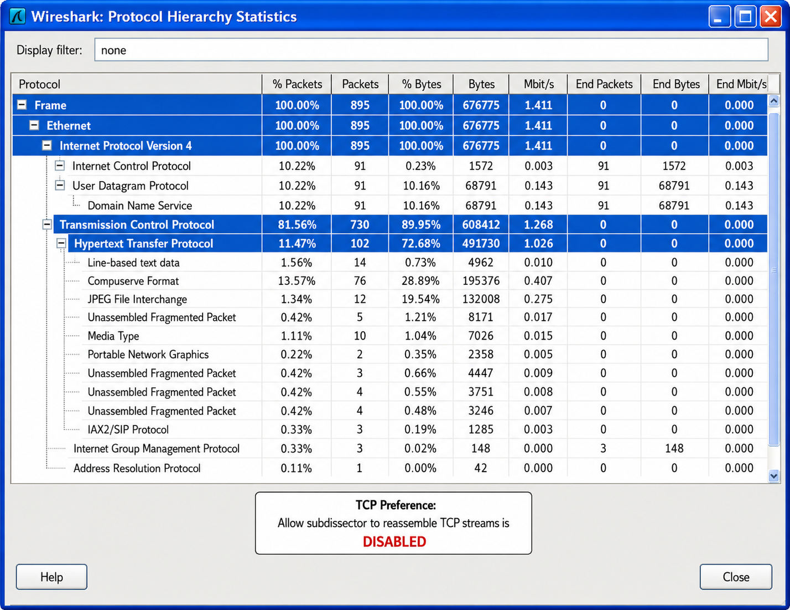
Identify Unusual Traffic from a Suspected Breached Host
Examining the protocol hierarchy is critical when analyzing traffic to/from a suspected compromised host. Look for unusual protocols or applications such as Internet Relay Chat (IRC), Trivial File Transfer Protocol (TFTP), Remote Procedure Call (RPC) or unrecognized applications. You can right-click any entry to create a filter, apply it, and follow the TCP/UDP stream.

A conversation is a pair of hosts communicating while an endpoint is a single side of a conversation. Why is this distinction important when you see a broadcast address in the Conversations window?
GeoIP lets you map IP addresses to an OpenStreetMap view. What three prerequisites must be met, and why might some endpoints not appear on the map?
Conversations, Endpoints & GeoIP
Select Statistics | Conversations to view the Conversations window. A conversation is a pair of physical or logical entities communicating. An endpoint is a single side of a conversation. Note that broadcasts and multicasts are listed as endpoints, even though there is no such host as a "broadcast host."
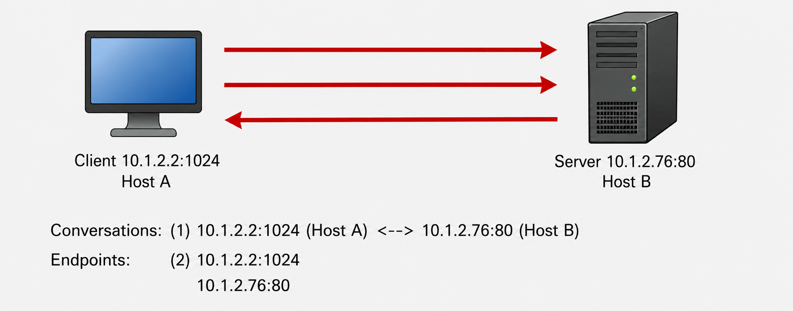
The Conversations window allows sorting on packets, bytes, bits per second or duration to detect the most active connections. In the example below, there is only one Ethernet conversation, but numerous IP, TCP and UDP conversations traveling over that one Ethernet conversation.
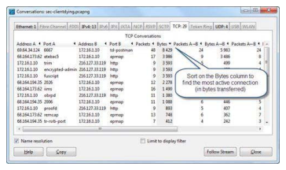
List Endpoints and Map Them on the Earth
Select Statistics | Endpoints to view the endpoints window. Endpoints display details regarding packets, bytes, transmitted packets and bytes, received packets and bytes. If you have the GeoIP database configured, you can map some or all hosts listed under the IPv4 tab.
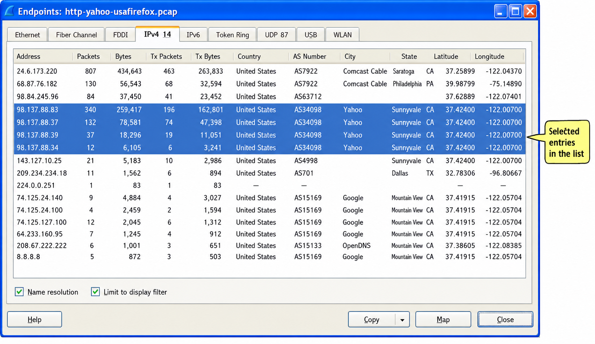
To use GeoIP mapping: (1) Download MaxMind GeoLite database files; (2) Extract to a local directory; (3) Configure via Edit | Preferences | Name Resolution | GeoIP database directories; (4) Open Statistics | Endpoints, click the IPv4 tab, then click the Map button to see addresses plotted as red flags on an OpenStreetMap view.
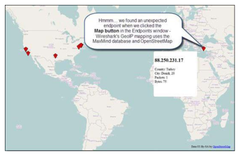
An application transfers a 500,000-byte file using only 320-byte packets instead of the 1,460-byte MSS. How many more packets does this require, and how much extra header overhead does it add compared to using the full MSS?
ARP packets do not match IP address display filters even though they contain IP addresses. Why? And how does this affect the IP Addresses statistics window?
Packet Lengths & IP/Port Lists
Select Statistics | Packet Lengths when baselining or analyzing a network application. Smaller packet sizes mean less-efficient file transfers and higher protocol overhead costs.
Ethernet 802.3 networks support 1518-byte packet sizes and a 1500-byte Maximum Transmission Unit (MTU). Removing header overhead (14-byte Ethernet header, 20-byte IP header, 20-byte TCP header, 4-byte FCS) leaves 1,460 bytes for TCP segment data — the Maximum Segment Size (MSS).

Math example for a 500,000-byte file transfer:
- Full MSS (1,460 bytes/packet): 343 packets × 58 bytes overhead = 19,894 bytes header overhead
- Small packets (320 bytes/packet): 1,563 packets × 58 bytes overhead = 90,654 bytes header overhead
File transfer applications using packets smaller than the maximum MTU may indicate: files smaller than the MTU, a device along the path limiting MTU size, or an application not developed to take advantage of maximum MTU. Look for ICMP Type 3, Code 4 (Destination Unreachable, Fragmentation Needed) packets for MTU limitation evidence.
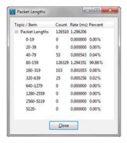
List All IPv4/IPv6 Addresses
Select Statistics | IP Addresses to list all IP addresses seen in the trace file. Wireshark prompts for a display filter to focus on specific criteria. Note: ARP packets have an IP address in the packet but no IP header, so IP address filters do not work on ARP packets.

List All Destinations and Port Usage
Select Statistics | IP Destinations to examine each destination IP address plus transport and port number. Select Statistics | IP Protocol Types to see the TCP/UDP breakdown. Select Statistics | UDP Multicast Streams to identify multicast source, destination, port and burst statistics. For all of these, apply a display filter first to focus on specific criteria.
A Flow Graph of a web browsing session to www.espn.com shows the client bouncing to numerous servers. What does this tell you about why web browsing can be slow, and how does this inform your troubleshooting approach?
The HTTP Packet Counter shows 404 errors in a trace file. What does response code 404 mean, and which five numerical groups does Wireshark use to categorize HTTP response codes?
Multicast, Flow Graphs, HTTP & WLAN Statistics
Analyze UDP Multicast Streams
Select Statistics | UDP Multicast Streams to identify multicast source, destination and port information as well as packet rate and burst statistics. The burst measurement interval counts multicast packets within a defined time period (in milliseconds). OSPF routers and IGMP multicast traffic are common examples.
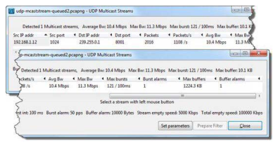
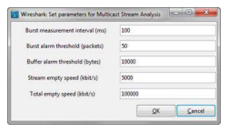
Graph the Flow of Traffic
Select Statistics | Flow Graphs to view traffic with source and destination addresses distributed across columns. Flow graphs can be created based on all traffic, filtered traffic or just TCP flows. The graph shows the TCP handshake process, HTTP GET requests, 301 redirections, and subsequent DNS queries and connections to new servers.

Gather HTTP Statistics
Select Statistics | HTTP to view load distribution, packet counter and request information. The Packet Counter breaks down HTTP request types (GET, POST) with HTTP response codes. Wireshark organizes responses into five groups:
| Code Range | Meaning |
|---|---|
| 1xx | Informational |
| 2xx | Success |
| 3xx | Redirection |
| 4xx | Client Error |
| 5xx | Server Error |
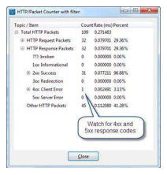
Examine All WLAN Statistics
Select Statistics | WLAN Traffic to list BSSID, channels, SSID, packet percentages, management and control packet types and protection mechanisms. Apply a display filter first (e.g., radiotap.channel.freq==2437 for Channel 6) to focus on specific traffic.
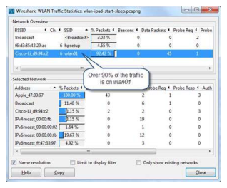
Case Studies
Wireshark provides an excellent open source solution for application testing. When vendors make grand claims of performance improvements, Wireshark lets you witness results at the packet level.
Aptimize Website Accelerator claims to improve website performance without code changes or extra hardware. To test this, two instances of Wireshark were run to capture traffic to and from a SharePoint site — once with Aptimize disabled (aptimize-off.pcapng) and once with it enabled (aptimize-on.pcapng). Browser cache was cleared and DNS cache flushed between tests.
The Statistics | Summary windows were opened side-by-side across both Wireshark instances. The results were validated across multiple repetitions:
- Time to load: 6.91s (off) vs 5.33s (on) — 22.9% faster
- Packets: 2,180 (off) vs 1,651 (on) — 24.3% fewer packets
- Bytes: 1,779,036 (off) vs 1,468,861 (on) — 17.44% fewer bytes
- HTTP GET requests: 90 (off) vs 34 (on) — 62.22% fewer GETs

Looking through the trace files, the number of HTTP GET requests dropped dramatically when optimization was enabled — rather than requesting small pieces of the page bit-by-bit, the browser asked for larger consolidated pieces received in a stream. The Statistics | Conversations window confirmed that all six separate HTTP connections to the SharePoint site required fewer packets, fewer bytes and less time with Aptimize enabled. The average improvement was 37% per connection.
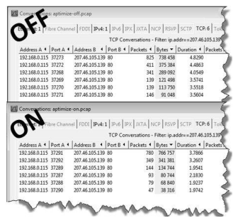
Key lesson: When analyzing web browsing sessions for optimization, use Statistics | Conversations filtered to a specific server IP to examine individual connections. All connections are typically concurrent — sum duration would overstate actual load time.
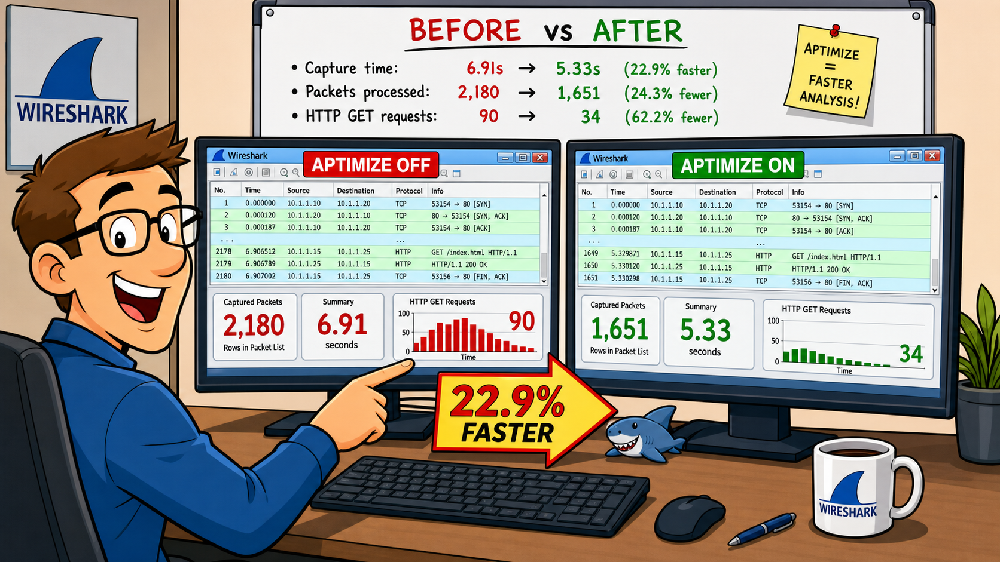
I use Wireshark to identify voice quality issues of VoIP calls over wired or wireless phones (including dual mode phones). Wireshark is set to capture packets from the subnet of the VoIP phones or from the port of the voice gateway.
I created an I/O graph using two filters — one for outgoing traffic from the phone (using the phone MAC or IP address) and one for incoming traffic to the phone. These VoIP phones use the G.711 codec which sends traffic consistently at 50 packets per second in each direction. If all goes well, this traffic should appear as a flat line on the I/O graph at 50 packets per second on the Y axis.
If the line is not flat, there are voice quality issues. In the IO Graph, a trace from a Nokia dual mode phone communicating over the WLAN showed fluctuations in the darker line (traffic from the phone) around the 2,400-second mark — meaning voice quality issues existed with traffic from the phone.
I use this technique with trace files to correlate problems with WLAN interference, monitoring interference using a spectrum analyzer or through WLAN analysis. This method works for troubleshooting any constant traffic pattern like voice, even if it is encrypted.
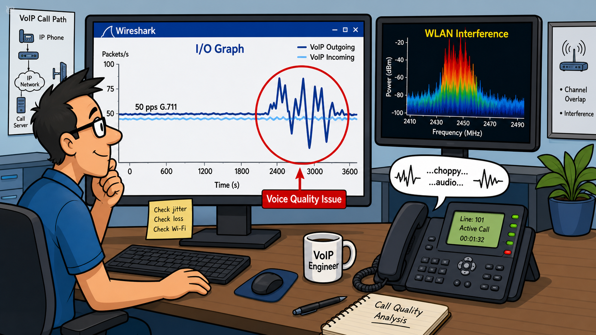
Wireshark's statistics provide details on the protocols and applications seen in saved or unsaved traces including the most active hosts or conversations, packet lengths, ports used and WLAN traffic. In addition, you can graph the flow of traffic to analyze separate interwoven communications or spot dependencies on other hosts.
You should take time to baseline network communications to ensure you can spot unusual traffic statistics. Use Protocol Hierarchy to characterize all protocols in use — especially on suspected breached hosts. Use Conversations and Endpoints to identify the most active connections and map IP addresses to geographic locations with GeoIP.
Review Questions
After capturing traffic to and from the host, open the Protocol Hierarchy window to look for unusual applications such as TFTP, IRC, etc. You can apply a display filter for the conversation from inside the Protocol Hierarchy window and then follow the TCP or UDP stream to reassemble the communications and identify commands or information exchanged.
Open the Statistics | Conversations window and select the TCP tab. Sort the information by the Bytes column. You can now right-click and apply a filter based on the most active conversation for further analysis.
GeoIP maps IP addresses in the Endpoints window to an OpenStreetMap view of the world. This feature is available if (a) Wireshark supports GeoIP, (b) the MaxMind GeoIP database files are loaded on the Wireshark system and (c) Wireshark's name resolution settings for GeoIP are configured properly.